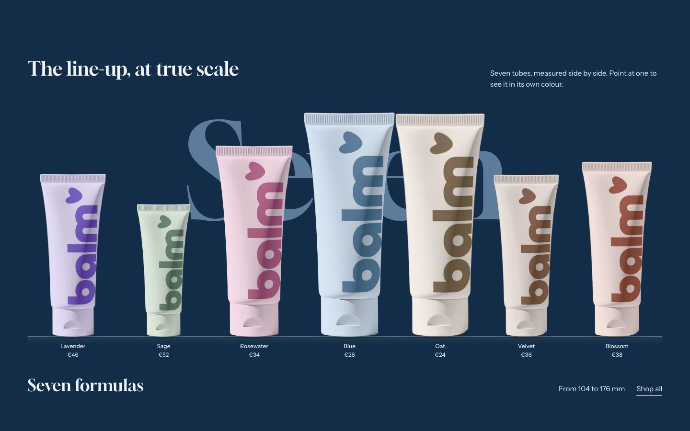
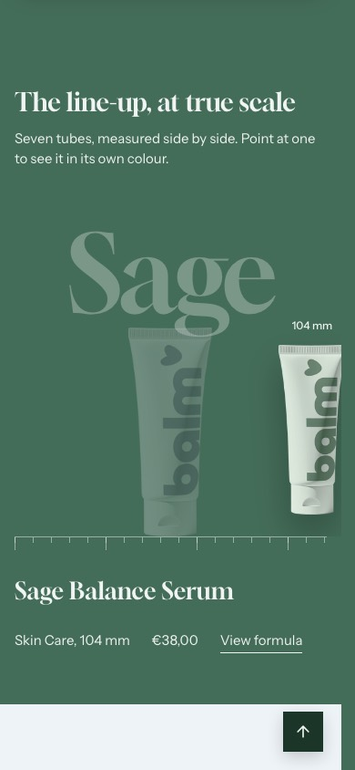

Line-up
Your products standing side by side on a shelf, each at its real height.
WhereAny template. Not available in the header or footer group.


What it is for
Show how big each product really is, for a range with several formats. The tallest product fills the shelf and the others are drawn on the same scale.
How it works
Each Product block has a Product and a Height, in millimeters, that you type. The products stand on a thin shelf, each with a soft shadow under it and its short name and price below. Pointing at a product or focusing it lifts it a little off the shelf, gives the section its color and shows its full name, type, format, price and View formula in the caption; the others fade. Each product opens its page. Word at rest is set large behind the products until one is chosen. Show the height range prints the shortest and the tallest heights; Show sizes in mm writes each height above its product and Show ruler draws a graduated ruler on the shelf, both off by default. On phones the shelf scrolls sideways, product by product, and the product in the middle is the chosen one.
Content tips
- Measure the products as they stand, cap included.
- Until you choose a product in one of its blocks, the section shows the first products of your store, one per block. Once you choose one, a block without a product is left out of the store.
Settings
Section settings (17)
| Setting | Values | Default | Notes |
|---|---|---|---|
| Heading | Text | The line-up, at true scale | |
| Text | Text | Give each product its height: the tallest one sets the scale. | |
| Word at rest | Text | Line-up | Shown large behind the products until one is chosen. |
| Caption heading | Text | The whole range | |
| Show the height range | Checkbox | On | |
| Show sizes in mm | Checkbox | Off | The height of each tube above it, and in its line under the shelf. |
| Show ruler | Checkbox | Off | |
| Button label | Text | Shop all | |
| Link | Link | /collections/all | |
| Show price | Checkbox | On | |
| Anchor | Text | Empty | Lowercase words joined by hyphens. Link to this section with #anchor, for example from a menu. |
| Shelf height (desktop) | 30 to 80 svh, step 2 | 52 svh | |
| Shelf height (mobile) | 30 to 70 svh, step 2 | 42 svh | |
| Top padding (desktop) | 0 to 200 px, step 4 | 120 px | |
| Bottom padding (desktop) | 0 to 200 px, step 4 | 72 px | |
| Top padding (mobile) | 0 to 200 px, step 4 | 96 px | |
| Bottom padding (mobile) | 0 to 200 px, step 4 | 56 px |
Block: Product
Product block settings (2)
| Setting | Values | Default | Notes |
|---|---|---|---|
| Product | Product | Empty | |
| Height | Number | 150 | In millimeters. The tallest product fills the shelf. |